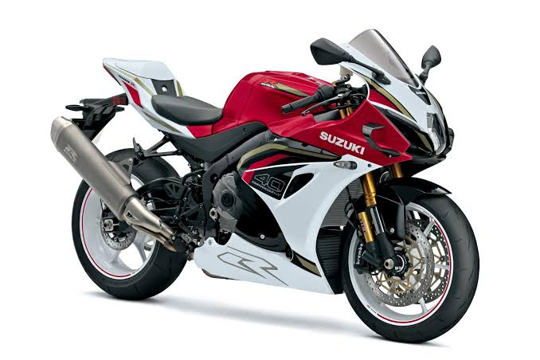

Honda CG 160
 Honda CG 160 - modelo conhecido pela confiabilidade e custo-benefício.
Honda CG 160 - modelo conhecido pela confiabilidade e custo-benefício.
R$
29.999,99
A CG 160 é uma opção muito popular para uso urbano e viagens curtas,
trazendo conforto, economia e boa performance para o dia a dia.
Honda Biz 125
 Honda Biz 125 - ideal para quem busca praticidade e versatilidade.
Honda Biz 125 - ideal para quem busca praticidade e versatilidade.
R$
19.999,99
A Biz 125 é reconhecida pela mobilidade urbana, facilidade de pilotagem
e manutenção simples, sendo uma excelente escolha para o cotidiano.
BMW S 1000 RR

BMW S 1000 RR - modelo esportivo para quem busca alta performance.
R$
59.999,99
Um modelo premium, pensado para quem busca velocidade, tecnologia e um
desempenho esportivo acima da média.
Som da BMW S 1000 RR: